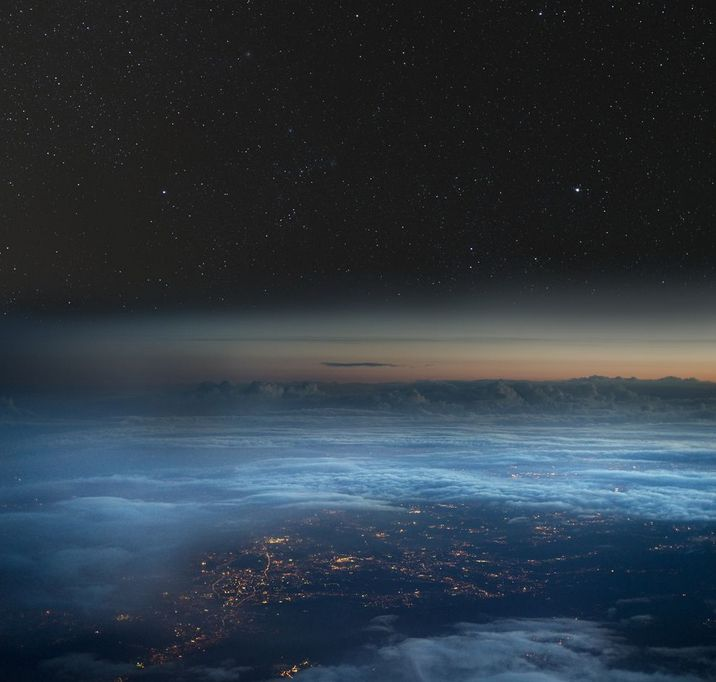
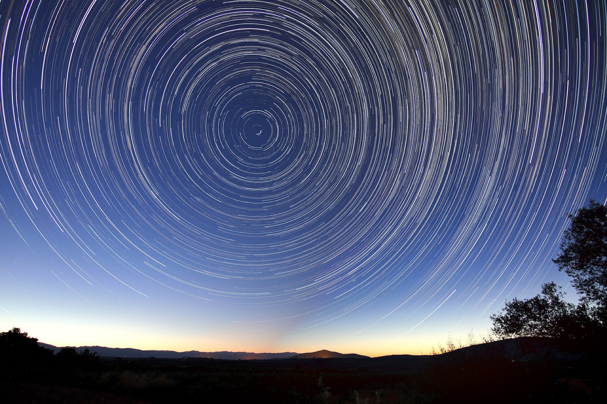

As the center of the universe, the stars spinning moves around the earth. The star could also serve as navigation, signpost. Not disturbed man-made satellite.

A timelapse photo peregrakan recording stars at night. The center point is a star that is just above the north pole of the earth. There are many amazing photo spread, it is not difficult to find a picture like this.
SUPPORT OUR PROJECT TO MAKE GREAT ILUSTRATION.
WE ARE INDONESIA WEB DESIGNER.
The project is still an early version. Only describe how the heavenly bodies revolve. Rotation time measurement is not based on a real time scale. Extra light effects sun-exposed parts of the globe and who could not be more charming.
Pics: debunkingflatearth.blogspot.com